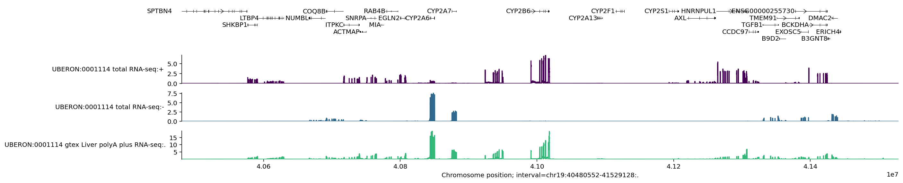
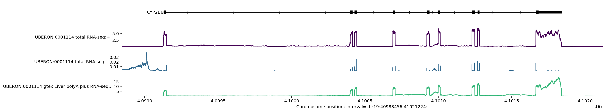
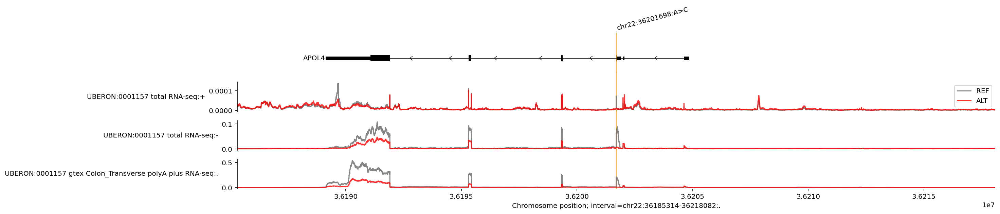

# @title Install AlphaGenome
# @markdown Run this cell to install AlphaGenome.
from IPython.display import clear_output
! pip install alphagenome
clear_output()How to use AlphaGenome to make predictions
how_to
Welcome to the quick start guide for AlphaGenome! The goal of this tutorial notebook is to quickly get you started with using the model and making predictions.
Open this tutorial in Google colab for interactive viewing.Imports
from alphagenome import colab_utils
from alphagenome.data import gene_annotation
from alphagenome.data import genome
from alphagenome.data import transcript as transcript_utils
from alphagenome.interpretation import ism
from alphagenome.models import dna_client
from alphagenome.models import variant_scorers
from alphagenome.visualization import plot_components
import matplotlib.pyplot as plt
import pandas as pdPredict outputs for a DNA sequence
AlphaGenome is a model that makes predictions from DNA sequences. Let’s load it up:
If using Google Colab, store your key in "Secrets" for persistent access across sessions (see [installation](https://www.alphagenomedocs.com/installation.html#google-colab)). Otherwise, `dna_client.create` can take the API key directly.dna_model = dna_client.create(colab_utils.get_api_key())The model can make predictions for the following output types:
[output.name for output in dna_client.OutputType]['ATAC',
'CAGE',
'DNASE',
'RNA_SEQ',
'CHIP_HISTONE',
'CHIP_TF',
'SPLICE_SITES',
'SPLICE_SITE_USAGE',
'SPLICE_JUNCTIONS',
'CONTACT_MAPS',
'PROCAP']AlphaGenome predicts multiple ‘tracks’ per output type, covering a wide variety of tissues and cell-types. However, predictions can be made efficiently for subsets of interest.
Here is how to make DNase-seq predictions (as specified by OutputType) in a subset of tracks corresponding to lung tissue (as specified by ontology_terms) for a short DNA sequence of length 2048:
Note: We use ontology terms from standardized biological sources like UBERON (for anatomy) and the Cell Ontology (CL) to provide consistent and widely recognized classifications for tissue and cell types.
output = dna_model.predict_sequence(
sequence='GATTACA'.center(2048, 'N'), # Pad to valid sequence length.
requested_outputs=[dna_client.OutputType.DNASE],
ontology_terms=['UBERON:0002048'], # Lung.
)The output object contains predictions for all the different requested output types (in this case, only output type DNASE). Predictions for genomic tracks are stored inside a TrackData object:
dnase = output.dnase
type(dnase)alphagenome.data.track_data.TrackDataTrackData objects have the following components:

The predictions of shape (sequence_length, num_tracks) are stored in .values:
print(dnase.values.shape)
dnase.values(2048, 1)array([[0.00138092],
[0.00121307],
[0.00121307],
...,
[0.00138092],
[0.00213623],
[0.00292969]], shape=(2048, 1), dtype=float32)And the corresponding metadata describing each of the tracks is stored in .metadata:
dnase.metadata| name | strand | Assay title | ontology_curie | biosample_name | biosample_type | biosample_life_stage | data_source | endedness | genetically_modified | |
|---|---|---|---|---|---|---|---|---|---|---|
| 0 | UBERON:0002048 DNase-seq | . | DNase-seq | UBERON:0002048 | lung | tissue | embryonic | encode | paired | False |
In this case, there is only one output track, so the track metadata returns only 1 row.
The track metadata is especially useful when requesting predictions for multiple tissues or cell-types, and when dealing with stranded assays (which are assays with separate readouts for the two DNA strands, such as CAGE and RNA-seq):
output = dna_model.predict_sequence(
sequence='GATTACA'.center(2048, 'N'), # Pad to valid sequence length.
requested_outputs=[
dna_client.OutputType.CAGE,
dna_client.OutputType.DNASE,
],
ontology_terms=[
'UBERON:0002048', # Lung.
'UBERON:0000955', # Brain.
],
)
print(f'DNASE predictions shape: {output.dnase.values.shape}')
print(f'CAGE predictions shape: {output.cage.values.shape}')DNASE predictions shape: (2048, 2)
CAGE predictions shape: (2048, 4)Notice that in this example, we requested predictions for 2 assays and 2 ontology terms simultaneously.
The CAGE track metadata describes the strand and tissue of each of the 4 predicted tracks (2 per DNA strand):
output.cage.metadata| name | strand | Assay title | ontology_curie | biosample_name | biosample_type | data_source | |
|---|---|---|---|---|---|---|---|
| 0 | hCAGE UBERON:0000955 | + | hCAGE | UBERON:0000955 | brain | tissue | fantom |
| 1 | hCAGE UBERON:0002048 | + | hCAGE | UBERON:0002048 | lung | tissue | fantom |
| 2 | hCAGE UBERON:0000955 | - | hCAGE | UBERON:0000955 | brain | tissue | fantom |
| 3 | hCAGE UBERON:0002048 | - | hCAGE | UBERON:0002048 | lung | tissue | fantom |
See the output metadata documentation for more information on the output types and output shapes. For the mapping between tissue names (e.g. ‘brain’ -> ‘UBERON:0000955’) and ontology terms, see this tutorial.
Predict outputs for a genome interval (reference genome)
For convenience, you can also directly make predictions for a human reference genome sequence specified by a genomic interval. For example, let’s predict RNA-seq for tissue ‘Right liver lobe’ in a 1MB region of Chromosome 19 around the gene CYP2B6, which encodes an enzyme involved in drug metabolism, and is primarily expressed in the liver.
We first load up a GTF file containing gene and transcript locations as annotated by GENCODE (more information on GTF format here):
# The GTF file contains information on the location of all trancripts.
# Note that we use genome assembly hg38 for human.
gtf = pd.read_feather(
'https://storage.googleapis.com/alphagenome/reference/gencode/'
'hg38/gencode.v46.annotation.gtf.gz.feather'
)
# Set up transcript extractors using the information in the GTF file.
gtf_transcripts = gene_annotation.filter_protein_coding(gtf)
gtf_transcripts = gene_annotation.filter_to_longest_transcript(gtf_transcripts)
transcript_extractor = transcript_utils.TranscriptExtractor(gtf_transcripts)And then fetch the gene’s location as a genome.Interval object by passing either its gene_symbol (HGNC naming convention) or ENSEMBL gene_id:
interval = gene_annotation.get_gene_interval(gtf, gene_symbol='CYP2B6')
intervalInterval(chromosome='chr19', start=40991281, end=41018398, strand='+', name='CYP2B6')We can resize it to a length compatible with the model:
interval = interval.resize(dna_client.SEQUENCE_LENGTH_1MB)The .resize() method adjusts the interval to the specified width by expanding (or contracting) around its original center. Note that dna_model.predict_interval() interprets this resizing as an expansion of the actual genomic sequence rather than padding tokens.
interval.width1048576See the essential commands documentation for more handy commands like resize.
Note that AlphaGenome supports the following input sequence lengths:
dna_client.SUPPORTED_SEQUENCE_LENGTHS.keys()dict_keys(['SEQUENCE_LENGTH_2KB', 'SEQUENCE_LENGTH_16KB', 'SEQUENCE_LENGTH_100KB', 'SEQUENCE_LENGTH_500KB', 'SEQUENCE_LENGTH_1MB'])We can now make predictions using our interval:
output = dna_model.predict_interval(
interval=interval,
requested_outputs=[dna_client.OutputType.RNA_SEQ],
ontology_terms=['UBERON:0001114'],
) # Right liver lobe.
output.rna_seq.values.shape(1048576, 3)In general, you can have multiple tracks for a given ontology term. In this case, we have 3 RNA-seq tracks for the tissue “Right liver lobe”.
Let’s visualise these predictions. It’s helpful visualise gene transcripts alongside the predicted tracks, so we extract them here:
longest_transcripts = transcript_extractor.extract(interval)
print(f'Extracted {len(longest_transcripts)} transcripts in this interval.')Extracted 29 transcripts in this interval.We also provide a visualization basics guide that integrates nicely with TrackData and other objects returned by the model API.
plot_components.plot(
components=[
plot_components.TranscriptAnnotation(longest_transcripts),
plot_components.Tracks(output.rna_seq),
],
interval=output.rna_seq.interval,
)
plt.show()
This plot visualises the 3 predicted RNA-seq tracks and also marks the location of the longest transcript per gene in the 1MB region.
We can zoom in to the middle of the plot by resizing the interval:
plot_components.plot(
components=[
plot_components.TranscriptAnnotation(
longest_transcripts, fig_height=0.1
),
plot_components.Tracks(output.rna_seq),
],
interval=output.rna_seq.interval.resize(2**15),
)
plt.show()
You can see here that predicted RNA-seq values are nicely aligned with the location of exons, and that the predictions are stranded – the predicted values are much higher for the positive strand, where the gene is located. We see that the CYP2B6 gene is on the positive strand since the arrows in the transcript go from left to right.
For more detail on the visualization library, please refer to the visualization basics guide and library documentation.
Predict variant effects
We can predict the effect of a variant on a specific output type and tissue by making predictions for the reference (REF) and alternative (ALT) allele sequences.
We specify the variant by defining a genome.Variant object. The specific variant below is a known variant affecting gene expression in colon tissue:
variant = genome.Variant(
chromosome='chr22',
position=36201698,
reference_bases='A', # Can differ from the true reference genome base.
alternate_bases='C',
)Next, we define the interval over which to make the REF and ALT predictions. A quick way to get a genome.Interval from a genome.Variant is by calling .reference_interval, which we can resize to a model-compatible sequence length:
interval = variant.reference_interval.resize(dna_client.SEQUENCE_LENGTH_1MB)We then use predict_variant to get the REF and ALT RNA-seq predictions in the interval for “Colon - Transverse” tissue (UBERON:0001157):
variant_output = dna_model.predict_variant(
interval=interval,
variant=variant,
requested_outputs=[dna_client.OutputType.RNA_SEQ],
ontology_terms=['UBERON:0001157'],
) # Colon - Transverse.We can plot the predicted REF and ALT values as a single plot and zoom in on the affected gene to better visualise the variant’s effect on gene expression:
longest_transcripts = transcript_extractor.extract(interval)
plot_components.plot(
[
plot_components.TranscriptAnnotation(longest_transcripts),
plot_components.OverlaidTracks(
tdata={
'REF': variant_output.reference.rna_seq,
'ALT': variant_output.alternate.rna_seq,
},
colors={'REF': 'dimgrey', 'ALT': 'red'},
),
],
interval=variant_output.reference.rna_seq.interval.resize(2**15),
# Annotate the location of the variant as a vertical line.
annotations=[plot_components.VariantAnnotation([variant], alpha=0.8)],
)
plt.show()
We see that the ALT allele (base ‘C’ at position 36201698) is associated with both lower expression and an exon skipping event in the APOL4 gene on the negative strand. Note that we can ignore the uppermost line plot which shows a very minimal predicted amount of expression on the positive DNA strand (check the y axis scales). It is possible to adjust the y axes limits, see visualization basics and library documentation.
Scoring the effect of a genetic variant
Scoring the effect of a genetic variant involves making predictions for the REF and ALT sequences and aggregating the track signal. This is implemented in score_variant, which uses specific variant_scorer configs for aggregation.
We provide a set of recommended variant scoring configurations as a dictionary (variant_scorers.RECOMMENDED_VARIANT_SCORERS), covering all output types, which we have assessed for their performance at domain-specific tasks. See the variant scoring documentation for more information. Here is a quick demo:
variant_scorer = variant_scorers.RECOMMENDED_VARIANT_SCORERS['RNA_SEQ']
variant_scores = dna_model.score_variant(
interval=interval, variant=variant, variant_scorers=[variant_scorer]
)The returned variant_scores is a list of length 1 because we only specified 1 scorer:
len(variant_scores)1The actual scores per variant are in AnnData format, which is a way of annotating data (the numerical scores) with additional information about the rows and columns.
variant_scores = variant_scores[0]
variant_scoresAnnData object with n_obs × n_vars = 37 × 667
obs: 'gene_id', 'strand', 'gene_name', 'gene_type'
var: 'name', 'strand', 'Assay title', 'ontology_curie', 'biosample_name', 'biosample_type', 'biosample_life_stage', 'gtex_tissue', 'data_source', 'endedness', 'genetically_modified'
uns: 'interval', 'variant', 'variant_scorer'
layers: 'quantiles'AnnData objects have the following components:

We have a variant effect score for each of the 37 genes in the interval and each of the 667 RNA_SEQ tracks:
variant_scores.X.shape(37, 667)We can access information on the 37 genes using .obs. Here are just first 5 genes:
variant_scores.obs.head()| gene_id | strand | gene_name | gene_type | |
|---|---|---|---|---|
| 0 | ENSG00000100320.24 | - | RBFOX2 | protein_coding |
| 1 | ENSG00000100336.18 | - | APOL4 | protein_coding |
| 2 | ENSG00000100342.22 | + | APOL1 | protein_coding |
| 3 | ENSG00000100345.23 | - | MYH9 | protein_coding |
| 4 | ENSG00000100348.10 | - | TXN2 | protein_coding |
Note that if you are using a variant scorer that is not gene-specific (i.e., a variant_scorers.CenterMaskScorer), then variant_scores.X would have shape (1, 667) and there will be no gene metadata available since there is no concept of genes in this scenario.
The description of each track is accessed using .var (this is the same dataframe as the output metadata, but is included alongside the variant scores for convenience):
variant_scores.var| name | strand | Assay title | ontology_curie | biosample_name | biosample_type | biosample_life_stage | gtex_tissue | data_source | endedness | genetically_modified | |
|---|---|---|---|---|---|---|---|---|---|---|---|
| 0 | CL:0000047 polyA plus RNA-seq | + | polyA plus RNA-seq | CL:0000047 | neuronal stem cell | in_vitro_differentiated_cells | embryonic | encode | paired | False | |
| 1 | CL:0000062 total RNA-seq | + | total RNA-seq | CL:0000062 | osteoblast | primary_cell | adult | encode | paired | False | |
| 2 | CL:0000084 polyA plus RNA-seq | + | polyA plus RNA-seq | CL:0000084 | T-cell | primary_cell | adult | encode | paired | False | |
| 3 | CL:0000084 total RNA-seq | + | total RNA-seq | CL:0000084 | T-cell | primary_cell | adult | encode | single | False | |
| 4 | CL:0000115 total RNA-seq | + | total RNA-seq | CL:0000115 | endothelial cell | in_vitro_differentiated_cells | adult | encode | single | False | |
| ... | ... | ... | ... | ... | ... | ... | ... | ... | ... | ... | ... |
| 662 | UBERON:0018115 polyA plus RNA-seq | . | polyA plus RNA-seq | UBERON:0018115 | left renal pelvis | tissue | embryonic | encode | single | False | |
| 663 | UBERON:0018116 polyA plus RNA-seq | . | polyA plus RNA-seq | UBERON:0018116 | right renal pelvis | tissue | embryonic | encode | single | False | |
| 664 | UBERON:0018117 polyA plus RNA-seq | . | polyA plus RNA-seq | UBERON:0018117 | left renal cortex interstitium | tissue | embryonic | encode | single | False | |
| 665 | UBERON:0018118 polyA plus RNA-seq | . | polyA plus RNA-seq | UBERON:0018118 | right renal cortex interstitium | tissue | embryonic | encode | single | False | |
| 666 | UBERON:0036149 gtex Skin_Not_Sun_Exposed_Supra... | . | polyA plus RNA-seq | UBERON:0036149 | suprapubic skin | tissue | adult | Skin_Not_Sun_Exposed_Suprapubic | gtex | paired | False |
667 rows × 11 columns
Some handy additional metadata can be found in .uns:
print(f'Interval: {variant_scores.uns["interval"]}')
print(f'Variant: {variant_scores.uns["variant"]}')
print(f'Variant scorer: {variant_scores.uns["variant_scorer"]}')Interval: chr22:35677410-36725986:.
Variant: chr22:36201698:A>C
Variant scorer: GeneMaskLFCScorer(requested_output=RNA_SEQ)We recommend interacting with variant scores by flattening AnnData objects using tidy_scores, which produces a dataframe with each row being a single score for each combination of (variant, gene, scorer, ontology). It optionally excludes stranded tracks which do not match the gene’s strand for gene-specific scorer.
The raw_score column contains the same values as stored in variant_scores.X. The quantile_score column is the rank of the raw_score in the distribution of scores for a background set of common variants, represented as a quantile probability. This allows for direct comparison across variant scoring strategies that yield scores on different scales. See FAQs for further details.
variant_scorers.tidy_scores([variant_scores], match_gene_strand=True)| variant_id | scored_interval | gene_id | gene_name | gene_type | gene_strand | junction_Start | junction_End | output_type | variant_scorer | track_name | track_strand | Assay title | ontology_curie | biosample_name | biosample_type | gtex_tissue | raw_score | quantile_score | |
|---|---|---|---|---|---|---|---|---|---|---|---|---|---|---|---|---|---|---|---|
| 0 | chr22:36201698:A>C | chr22:35677410-36725986:. | ENSG00000100320 | RBFOX2 | protein_coding | - | None | None | RNA_SEQ | GeneMaskLFCScorer(requested_output=RNA_SEQ) | CL:0000047 polyA plus RNA-seq | - | polyA plus RNA-seq | CL:0000047 | neuronal stem cell | in_vitro_differentiated_cells | 0.000903 | 0.606708 | |
| 1 | chr22:36201698:A>C | chr22:35677410-36725986:. | ENSG00000100320 | RBFOX2 | protein_coding | - | None | None | RNA_SEQ | GeneMaskLFCScorer(requested_output=RNA_SEQ) | CL:0000062 total RNA-seq | - | total RNA-seq | CL:0000062 | osteoblast | primary_cell | -0.000363 | -0.477020 | |
| 2 | chr22:36201698:A>C | chr22:35677410-36725986:. | ENSG00000100320 | RBFOX2 | protein_coding | - | None | None | RNA_SEQ | GeneMaskLFCScorer(requested_output=RNA_SEQ) | CL:0000084 polyA plus RNA-seq | - | polyA plus RNA-seq | CL:0000084 | T-cell | primary_cell | -0.007063 | -0.989667 | |
| 3 | chr22:36201698:A>C | chr22:35677410-36725986:. | ENSG00000100320 | RBFOX2 | protein_coding | - | None | None | RNA_SEQ | GeneMaskLFCScorer(requested_output=RNA_SEQ) | CL:0000084 total RNA-seq | - | total RNA-seq | CL:0000084 | T-cell | primary_cell | -0.007229 | -0.990997 | |
| 4 | chr22:36201698:A>C | chr22:35677410-36725986:. | ENSG00000100320 | RBFOX2 | protein_coding | - | None | None | RNA_SEQ | GeneMaskLFCScorer(requested_output=RNA_SEQ) | CL:0000115 total RNA-seq | - | total RNA-seq | CL:0000115 | endothelial cell | in_vitro_differentiated_cells | 0.000461 | 0.449849 | |
| ... | ... | ... | ... | ... | ... | ... | ... | ... | ... | ... | ... | ... | ... | ... | ... | ... | ... | ... | ... |
| 14647 | chr22:36201698:A>C | chr22:35677410-36725986:. | ENSG00000293594 | ENSG00000293594 | processed_pseudogene | - | None | None | RNA_SEQ | GeneMaskLFCScorer(requested_output=RNA_SEQ) | UBERON:0018115 polyA plus RNA-seq | . | polyA plus RNA-seq | UBERON:0018115 | left renal pelvis | tissue | 0.006467 | 0.989427 | |
| 14648 | chr22:36201698:A>C | chr22:35677410-36725986:. | ENSG00000293594 | ENSG00000293594 | processed_pseudogene | - | None | None | RNA_SEQ | GeneMaskLFCScorer(requested_output=RNA_SEQ) | UBERON:0018116 polyA plus RNA-seq | . | polyA plus RNA-seq | UBERON:0018116 | right renal pelvis | tissue | 0.007303 | 0.992679 | |
| 14649 | chr22:36201698:A>C | chr22:35677410-36725986:. | ENSG00000293594 | ENSG00000293594 | processed_pseudogene | - | None | None | RNA_SEQ | GeneMaskLFCScorer(requested_output=RNA_SEQ) | UBERON:0018117 polyA plus RNA-seq | . | polyA plus RNA-seq | UBERON:0018117 | left renal cortex interstitium | tissue | 0.004375 | 0.964537 | |
| 14650 | chr22:36201698:A>C | chr22:35677410-36725986:. | ENSG00000293594 | ENSG00000293594 | processed_pseudogene | - | None | None | RNA_SEQ | GeneMaskLFCScorer(requested_output=RNA_SEQ) | UBERON:0018118 polyA plus RNA-seq | . | polyA plus RNA-seq | UBERON:0018118 | right renal cortex interstitium | tissue | 0.003006 | 0.905090 | |
| 14651 | chr22:36201698:A>C | chr22:35677410-36725986:. | ENSG00000293594 | ENSG00000293594 | processed_pseudogene | - | None | None | RNA_SEQ | GeneMaskLFCScorer(requested_output=RNA_SEQ) | UBERON:0036149 gtex Skin_Not_Sun_Exposed_Supra... | . | polyA plus RNA-seq | UBERON:0036149 | suprapubic skin | tissue | Skin_Not_Sun_Exposed_Suprapubic | -0.002312 | -0.822706 |
14652 rows × 19 columns
Highlighting important regions with in silico mutagenesis
To highlight which regions in a DNA sequence are functionally important for a final variant prediction, we can perform an in silico mutagenesis (ISM) analysis by scoring all possible single nucleotide variants in a specific interval.
Here is a visual overview of this process:

We define an ism_interval, which is a relatively small region of DNA that we want to systematically mutate. We also define the sequence_interval, which is the contextual interval the model will use when making predictions for each variant.
# 2KB DNA sequence to use as context when making predictions.
sequence_interval = genome.Interval('chr20', 3_753_000, 3_753_400)
sequence_interval = sequence_interval.resize(dna_client.SEQUENCE_LENGTH_2KB)
# Mutate all bases in the central 256-base region of the sequence_interval.
ism_interval = sequence_interval.resize(256)Next, we define the scorer we want to use to score each of the ISM variants. Here, we use a center mask scorer on predicted DNASE values, which will score each variant’s effect on DNA accessibility in the 500bp vicinity. See the variant scoring documentation for more information on variant scoring.
dnase_variant_scorer = variant_scorers.CenterMaskScorer(
requested_output=dna_client.OutputType.DNASE,
width=501,
aggregation_type=variant_scorers.AggregationType.DIFF_MEAN,
)Finally, we can use score_variants (notice the plural s) to score all variants.
Note that this operation is quite expensive. For speed reasons, we recommend using shorter input sequences for the contextual sequence_interval and narrower ism_interval regions to mutate if possible.
variant_scores = dna_model.score_ism_variants(
interval=sequence_interval,
ism_interval=ism_interval,
variant_scorers=[dnase_variant_scorer],
)The length of the returned variant_scores is 768, since we scored 768 variants (256 positions * 3 alternative bases per position):
len(variant_scores)768Each variant has scores of shape (1, 305), reflecting the fact that we are not using a gene-centric scorer and that there are 305 DNASE tracks:
# Index into first variant and first scorer.
variant_scores[0][0].X.shape(1, 305)To understand which positions are most influential in the predictions, we can visualize these scores using a sequence logo. This requires summarizing the scores into a single scalar value per variant.
As an example, let’s extract the DNASE score for just the K562 cell line, a widely used experimental model. Alternatively, you could average across multiple tissues to obtain a single scalar value.
def extract_k562(adata):
values = adata.X[:, adata.var['ontology_curie'] == 'EFO:0002067']
assert values.size == 1
return values.flatten()[0]
ism_result = ism.ism_matrix(
[extract_k562(x[0]) for x in variant_scores],
variants=[v[0].uns['variant'] for v in variant_scores],
)The shape of ism_result is (256, 4) since we have 1 score per position per each of the 4 DNA bases.
Note that in this case, our call to ism.ism_matrix() had the argument multiply_by_sequence set to ‘True’, so the output array contains non-zero values only for the bases corresponding to the reference sequence.
ism_result.shape(256, 4)Finally, we plot the contribution scores as a sequence logo:
plot_components.plot(
[
plot_components.SeqLogo(
scores=ism_result,
scores_interval=ism_interval,
ylabel='ISM K562 DNase',
)
],
interval=ism_interval,
fig_width=35,
)
plt.show()
This plot shows that the sequence between positions ~225 to ~240 has the strongest effect on predicted nearby DNAse in K562 cells.
These contribution scores can be used to systematically discover motifs important for different modalities and cell types, find the transcription factors binding those motifs and map motif instances across the genome. Here are a few tools you can use to do this: - tfmodisco-lite - tangermeme - tomtom
Making mouse predictions
So far, this notebook has focused on predictions for human (Organism.HOMO_SAPIENS). To generate predictions for mouse, specify the organism as Organism.MUS_MUSCULUS instead. Please note that the supported ontology terms differ between species.
The following example demonstrates how to call predict_sequence for mouse predictions:
output = dna_model.predict_sequence(
sequence='GATTACA'.center(2048, 'N'), # Pad to valid sequence length.
organism=dna_client.Organism.MUS_MUSCULUS,
requested_outputs=[dna_client.OutputType.DNASE],
ontology_terms=['UBERON:0002048'], # Lung.
)And here is an example of calling predict_interval for a mouse genomic interval:
interval = genome.Interval('chr1', 3_000_000, 3_000_001).resize(
dna_client.SEQUENCE_LENGTH_1MB
)
output = dna_model.predict_interval(
interval=interval,
organism=dna_client.Organism.MUS_MUSCULUS,
requested_outputs=[dna_client.OutputType.RNA_SEQ],
ontology_terms=['UBERON:0002048'], # Lung.
)
output.rna_seq.values.shape(1048576, 3)Conclusion
That’s it for the quick start guide. To dive in further, check out our other tutorials.
Reuse
© HakyImLab and Listed Authors - CC BY 4.0 for Text and figures - MIT for code